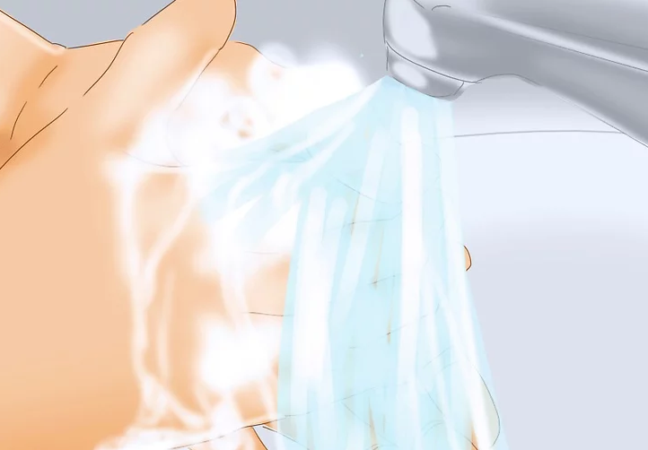
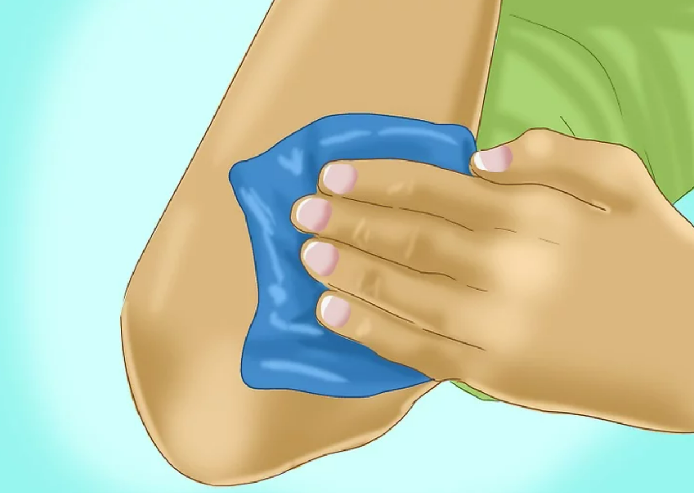

근육의 타박상 관절의 염좌등의 부상에서 가장중요한 것은 손상 후 24시간 이내에 R.I.C.E(안정-Rest, 냉찜질-Ice, 압박-Compression, 거상-Elevation)요법을 적용하는
것입니다. 근육과 같은 연부조직이 손상을 받게되면 주변 혈관들도 함께 손상을 받게되고 이로 인해 혈액이 손상부위에 모이게 될뿐만 아니라 인접한 조직들이 압박을 받게 됩니다.
이러한 압박은 이차적인 조직의 손상을 유발하게 되므로 손상부위의 출혈을 최소화 하여야 됩니다.
안정,휴식(Rest)
부상을 당했다면 활동을 멈추어야 합니다. 그렇지 않으면 출혈이 많아지고 붓기도 심해집니다. 다리를 다쳤다면 즉시 목발을 사용하거나 주변사람들의 부축을 받아 활동을 최소화하여야 합니다.
팔을 다쳤다면
다치지 않은 팔로 부상당한 팔의 움직임을 최소화 하여야 합니다.
냉찜질(Ice)
손상직후 바로 냉찜질법을 적용해야 하며 이는 손상부위의 대사활동을 감소시켜줍니다. 손상 후 1-2시간 마다 한번씩 15분 정도 냉찜질을해줍니다. 젤의 형태나 팩 형태의 얼음주머니를
사용합니다.
압박(Compression)
압박은 흔히 탄력붕대를 사용하는 것이 좋은 방법입니다. 손상부위의 적절한 압박은 손상부위의 출혈 및 부종을감소시켜줍니다. 압박은 냉찜질 전, 후에 실시하여야 합니다. 압박붕대를 감을 때 주의점은
단단히
감는 것은 좋으나 통증이 있을 정도의 단단함은 좋지 않습니다. 또한 심장에서 먼 곳 에서 가까운 쪽으로 감아주는 것이 좋습니다.
거상(Elevation)
거상은 부상부위를 심장높이 보다 높게 들어 올려주는 것입니다. 손상부위의 거상은 손상부위의 압력을 낮춰주어 붓기를 줄여줍니다.
⚠ R.I.C.E 요법은 치료가 아닙니다 ⚠
R.I.C.E 요법은 부상 후 추가적인 손상을 줄여주고 회복에 도움을 줄 수 있지만 이것이 근본적 치료는 아닙니다.
부상 후 초기에는R.I.C.E 요법을 적용하고 곧바로 가까운 병원에서 부상부위에 대한
진료를 보는 것이 최선의 방법입니다.
찰과상에 의한 손상시 응급처치
상처 세척

찰과상을 치료하기 전에 균에 감염될 수 있는 위험성을 낮춰놓아야 합니다.
찰과상 자체는 별로 큰 부상이 아니지만, 균에 감염되면 심하게 아플 수 있습니다. 물과 비누로 꼼꼼히 손을 씻은 다음에 상처를 치료합니다
지혈하기

일단 손을 씻은 다음에 찰과상을 치료합니다. 찰과상의 정도에 따라 지혈을 해야 할 수도 있습니다.
일반적으로 가벼운 찰과상인 경우, 출혈이 심하지 않으며 작은 상처는 보통 출혈이 저절로 멎습니다. 상처에서 계속 피가 나면 멸균 거즈나 붕대를 상처에 갖다줍니다. 상처를 계속 꽉
눌러줍니다.
상처 세척하기
어느 정도 지혈이 되면 상처를 조심스럽게, 꼼꼼히 세척해 균에 감염되지 않도록 합니다. 식염수가 있으면 식염수로 상처 주변을 세척합니다. 식염수가 없으면 차가운 물로 씻어줍니다. 상처를 자극해
다시 피가 나지 않도록 조심합니다.
상처 드레싱
상처 드레싱를 하기 전에 먼저 항생제 연고나 항생제 크림을 얇게 펴발라줍니다. 이렇게 하면 상처 표면을 보습하고 상처가 자연스럽게 아무는 데 도움이 되며 감염을 예방할 수 있습니다.
연고를 발랐으면 메디폼 같은 습윤드레싱제품으로 상처 부위를 감싸줍니다.
탈골시 응급처치
의사가 아닌 사람이 탈구를 바로잡으려 해서는 안됩니다
비전문가가 어긋난 뼈를 제자리로 맞추려다가 더 큰 사고로 이어질수있습니다.
부상한 부분을 편하게 하고 찬 물수건으로 찜질을 해줍니다
찜질을 해줌으로서 탈구된 부위의 고통을 갈아 앉히며, 붓기를 예방해줍니다.
충격을 방지합니다
탈골 부위가 외부충격에 노출되지 않도록 충격을 방지해 줍니다.
이동할 때 손상받은 부위가 움직이지 않도록 합니다
병원에 도착하기 전까지 탈구된 부위가 움직이지 못하도록 단단하게 고정을 시킨후, 병원으로 신속히 이동합니다.